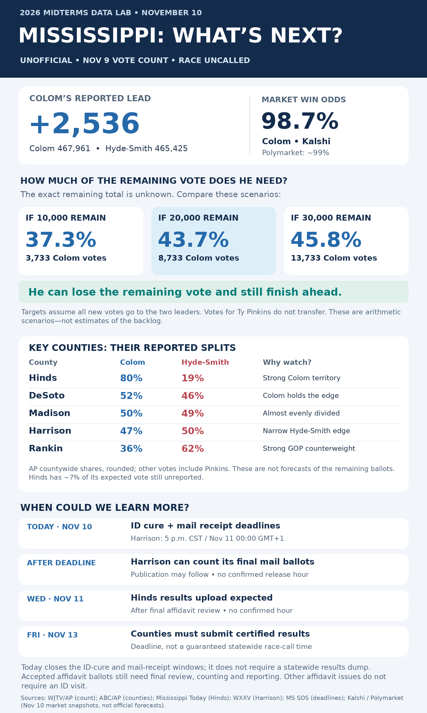

+2,536 votes
Colom’s reported lead
467,961 for Colom; 465,425 for Hyde-Smith. Independent Ty Pinkins has 20,032.
Cindy Hyde-Smith won by almost ten points in 2020. Donald Trump carried Mississippi by nearly 23 in 2024. Now Scott Colom leads an unfinished Senate count—and a victory would end a 145-year absence of Black senators from the state.
Uncalled • November 9 vote snapshot • Reviewed November 10, 2026Dated explainer, not a live feed. Colom leads; this page does not declare a winner. Main-tracker totals have their own snapshot date.
467,961 for Colom; 465,425 for Hyde-Smith. Independent Ty Pinkins has 20,032.
Of 953,418 reported Senate votes, including Pinkins. The margin is about 0.27 percentage points.
This U.S. Senate election uses plurality voting. There is no ranked-choice transfer of Pinkins’s votes and no runoff just because nobody reaches 50%.
Count: WJTV/AP, November 9. Election rule: WLBT.
The surprise is measurable: a normally Republican state, an incumbent with a comfortable previous win, and a race that forecasters still put in the Republican column.
Each bar measures the Republican minus Democratic vote share. Left of center favors the Democrat. The 2026 figure is unfinished.
Scale: center = tied; each side extends to 25 points. Calculations use all reported votes, not a two-party-only denominator. 2020 certified results · 2024 certified results · 2026 count.
Hyde-Smith defeated Mike Espy in 2020, 709,511 votes to 578,691: 54.11% to 44.13%. Against that same-office baseline, the current margin has moved about 10.24 points toward the Democrat.
This compares margins across two elections. It does not mean 10% of individual voters switched parties; turnout and candidates changed.
On October 20, Cook moved Mississippi from Solid Republican to Likely Republican. That acknowledged vulnerability while still favoring Hyde-Smith. A Democratic lead after Election Day goes well beyond that expectation.
Cook’s contemporaneous explanation identifies candidate quality as part of the shift.
Hyde-Smith blocked Colom’s federal district-court nomination in 2023 by withholding her home-state approval, or “blue slip.” Fellow Mississippi Republican Roger Wicker supported the nomination. A Colom victory would therefore replace the senator who helped prevent him from becoming a judge. Her office’s account · Mississippi Today.
Affordability also became a campaign flashpoint. Colom attacked Hyde-Smith’s advice to choose a different protein when beef became expensive. Reuters’s reporting from Jackson connects the close race with voters’ frustration over household costs. That is evidence of a campaign issue, not proof of exactly how many votes it moved. Reuters, November 9.
Yes—the last Black senator from Mississippi was Blanche K. Bruce, whose term ended on March 3, 1881. A Colom victory would be the state’s first election of a Black senator by popular vote.
1881 to the 2026 election. A normal new Senate term beginning in January 2027 would come nearly 146 years after his departure.
John C. Stennis’s 1982 reelection was Mississippi’s last Democratic U.S. Senate election victory. Both seats have been Republican since 1989.
A Mississippi Republican, Revels became the first Black member of the U.S. Senate—and of Congress—on February 25, 1870. The state legislature elected him to complete a term.
Born enslaved, Bruce became the first Black senator to complete a full six-year term. Mississippi’s legislature elected him in 1874. He served as a Republican and left office in 1881.
Mississippi’s new constitution imposed poll taxes, literacy tests and discretionary interpretation requirements that disenfranchised Black voters and many poor White voters. The long absence of Black senators followed the destruction of Reconstruction-era political rights, not simply a lack of candidates.
The Seventeenth Amendment established popular election of U.S. senators. Revels and Bruce had been elected by legislators, rather than in statewide popular Senate elections.
Stennis won reelection in 1982, retired after his term, and was succeeded by Republican Trent Lott in January 1989.
If Colom wins, he would be Mississippi’s first Black senator since Bruce and its first Black senator chosen directly by voters. He would also be the first Democrat to win a Mississippi Senate election in 44 years.
History: U.S. Senate on Revels · U.S. Senate on Bruce · Mississippi Civil Rights Museum · National Archives · Stennis biography · 1982/1989 benchmarks.
Revels and Bruce were Reconstruction-era Republicans. Stennis was a Democrat from a very different era of Southern politics. These milestones track representation and electoral history; nineteenth-century party coalitions cannot be treated as identical to today’s parties.
Colom starts 2,536 votes ahead. Hyde-Smith must gain more than that in net votes to overtake him. Colom can receive less than half of the new vote and still finish ahead.
The rest goes to Hyde-Smith. These controls model valid Senate votes, not raw affidavit envelopes. Changing them does not change market odds.
It means roughly three out of four evaluated affidavit ballots were accepted in that particular sample. It does not mean that 75% of every remaining-vote estimate should be counted, or that every accepted ballot has already appeared in public totals.
For example, 20,000 unresolved raw affidavit ballots × 75% = 15,000 accepted ballots under that assumption. Some accepted ballots could still contain no valid Senate vote. Separately add eligible mail ballots and accepted-but-unreported votes only if they are not already included. Acceptance rates can change by county and reason for the affidavit.
The calculator instead asks directly for additional valid Senate votes. Its 20,000 default is a planning scenario, not a verified backlog.
Let N be new valid votes, O be new votes for other candidates, and C be Colom’s new votes. His final lead is 2,536 + 2C + O − N. To finish strictly ahead, C must exceed (N − O − 2,536) ÷ 2. Equality is a tie, so the displayed target uses the next whole vote. For any fixed remaining pool, votes for Pinkins reduce the votes available to Hyde-Smith; they are never transferred.
Hinds is the strongest Democratic opportunity among these counties. Rankin and Lee provide Republican counterweights; DeSoto, Madison and Harrison show why “all late ballots favor one party” is too simple.
| County / source update | Colom | Hyde-Smith | Estimated vote unreported | Why watch? |
|---|---|---|---|---|
| Hinds Nov 6 | 80% | 19% | ~7% | Largest Democratic opportunity |
| DeSoto Nov 9 | 52% | 46% | ~3% | Colom leads in the reported vote |
| Madison Nov 5 | 50% | 49% | ~5% | Almost evenly divided |
| Harrison Nov 6 | 47% | 50% | ~4% | Narrow Republican advantage |
| Rankin Nov 6 | 36% | 62% | ~5% | Strong Republican counterweight |
| Lee Nov 9 | 40% | 58% | ~6% | Republican-leaning reported vote |
Shares are rounded AP percentages of all reported Senate votes. Remainders include Pinkins and rounding. “Unreported” is 100 minus AP’s expected-vote reporting estimate; it is neither a count of affidavit envelopes nor an exact measure of valid votes left. Source updates range from November 5–9. County source.
November 10 is the deadline for mail ballots postmarked by Election Day to arrive, and for affidavit voters with photo-ID issues to provide the required identification. It is not a statewide results-dump deadline. Other affidavit reasons generally do not require voters to return with ID. Check the relevant circuit clerk’s office for its hours. Secretary of State.
The clerk described a meeting to accept or reject ballots, followed by counting after the 5 p.m. CST mail deadline / November 11, 00:00 GMT+1. That makes a later update possible, but no publication hour is confirmed. Harrison clerk’s explanation.
Ballots with ID issues must clear this step before the final review. An expired cure window is not the same as an uploaded Senate total.
The county’s attorney expects the resolution board to complete its review before accepted ballots enter the final tally and results are uploaded. This is a reported expectation, not a guaranteed release. Mississippi Today, November 9.
This is the county submission deadline. A news organization’s race call can come before certification if the remaining vote cannot plausibly change the winner; it need not come at a preset hour. Secretary of State.
Mississippi’s 82 counties administer their own counts. Affidavit ballots need eligibility checks because the voter was missing from the pollbook, appeared at a different precinct, lacked identification or had another issue. Acceptance of the voter’s eligibility is a separate step from opening, resolving and counting the ballot.
Election-postmarked mail can arrive through November 10. Photo-ID cures can also remain open that day. County review boards then make final decisions, officials count the valid votes, and counties publish or upload totals in batches. A ballot can be accepted but not yet included in a public result.
These stages explain why a quiet results feed does not necessarily mean officials have stopped working—and why a meeting time is not a promised release time.
Hyde-Smith: 1.4%. November 10 market snapshot.
Hyde-Smith: approximately 1%. November 10 market snapshot.
Inspected around 6 a.m. CST / 13:00 GMT+1 on November 10. Market-implied odds can change and are not an official projection or a calibrated county-ballot model. The downloadable graphic preserves an earlier same-day Kalshi reading of 98.7%.
The arithmetic explains why Colom has room to lose the remaining vote. Hinds’s earlier split supplies a favorable geographic clue. Neither fact alone establishes a numerical win probability. We do not assign made-up odds to the 10,000, 20,000 or 30,000 scenarios.

History, official past returns, current unofficial totals, county reporting estimates and market odds answer different questions. Each keeps its own date and label. This page does not refresh automatically.